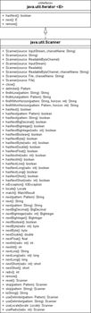
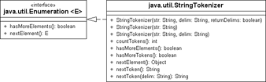
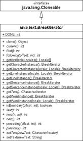

4.9 Zerlegen von Zeichenketten
Die Java-Bibliothek bietet einige Klassen und Methoden, um nach bestimmten Mustern große Zeichenketten in kleinere zu zerlegen. In diesem Kontext sind die Begriffe Token und Delimiter zu nennen: Ein Token ist ein Teil eines Strings, der durch bestimmte Trennzeichen (engl. delimiter) von anderen Tokens getrennt wird. Nehmen wir als Beispiel den Satz »Moderne Musik ist Instrumentespielen nach Noten« (Peter Sellers). Wählen wir Leerzeichen als Trennzeichen, lauten die einzelnen Tokens »Moderne«, »Musik« und so weiter.
Die Java-Bibliothek bietet eine Reihe von Möglichkeiten zum Zerlegen von Zeichenfolgen, von denen die zwei ersten in den nachfolgenden Abschnitten vorgestellt werden:
- split() von String: Aufteilen mit einem Delimiter, der durch reguläre Ausdrücke beschrieben wird.
- Scanner: Schöne Klasse zum Ablaufen einer Eingabe.
- StringTokenizer: Der Klassiker aus Java 1.0. Delimiter sind nur einzelne Zeichen.
- BreakIterator: Findet Zeichen-, Wort-, Zeilen- oder Satz-Grenzen.
4.9.1 Splitten von Zeichenketten mit split()
Die Objektmethode split() eines String-Objekts zerlegt die eigene Zeichenkette in Teilzeichenketten. Die Trenner sind völlig frei wählbar und als regulärer Ausdruck beschrieben. Die Rückgabe ist ein Feld der Teilzeichenketten.
| Beispiel |
|
Zerlege einen Domain-Namen in seine Bestandteile: String path = "www.tutego.com"; |
|
Da der Punkt als Trennzeichen ein Sonderzeichen für reguläre Ausdrücke ist, muss er passend mit dem Backslash auskommentiert werden. Das erledigt die statische Methode quote(). Andernfalls liefert split(".") auf jedem String ein Feld der Länge 0. |
Ein häufiger Trenner ist \s, also Weißraum.
| Beispiel |
|
Zähle die Anzahl der Wörter in einem Satz: String string = "Hört es euch an, denn das ist mein Gedudel!"; |
String.split() geht auf Pattern#split()
Die split()-Methode aus der String-Klasse delegiert wie auch bei match() an das Pattern-Objekt:
public String[] split( String regex, int limit )
{
return Pattern.compile( regex ).split( this, limit );
}
public String[] split( String regex )
{
return split( regex, 0 );
}
Am Quellcode ist zu erkennen, dass für jeden Methodenaufruf von split() auf dem String-Objekt ein Pattern übersetzt wird. Das ist nicht ganz billig, und so soll bei mehrmaligem Split mit dem gleichen Zerlege-Muster gleich ein Pattern-Objekt und dort das split() verwendet werden:
final class java.lang.String |
- String[] split(String regex)
Zerlegt die aktuelle Zeichenkette mit dem regulären Ausdruck. - String[] split(String regex, int limit)
Zerlegt die aktuelle Zeichenkette mit dem regulären Ausdruck, liefert jedoch maximal begrenzt viele Teilzeichenfolgen.
final class java.util.regex.Pattern |
- String[] split(CharSequence input)
Zerlegt die Zeichenfolge input in Teilzeichenketten, wie es das aktuelle Pattern-Objekt befiehlt. - String[] split(CharSequence input, int limit)
Wie split(CharSequence), doch nur höchstens limit viele Teilzeichenketten.
4.9.2 Die Klasse Scanner
Die Klasse java.util.Scanner kann eine Zeichenkette in Tokens zerlegen und einfach Dateien zeilenweise einlesen. Bei der Zerlegung kann ein regulärer Ausdruck den Delimiter beschreiben. Damit ist Scanner flexibler als ein StringTokenizer, der nur einzelne Zeichen als Trenner zulässt.
Zum Aufbau der Scanner-Objekte bietet die Klasse einige Konstruktoren an, die die zu zerlegenden Zeichenfolgen unterschiedlichen Quellen entnehmen, etwa einem String, einem Datenstrom (beim Einlesen von der Kommandozeile wird das System.in sein), einem File-Objekt oder diversen NIO-Objekten. Falls ein Objekt vom Typ Closeable dahintersteckt, wie ein Writer, sollte mit close() der Scanner geschlossen werden, der das close() zum Closeable weiterleitet. Beim String ist das nicht nötig, und bei File schließt der Scanner selbstständig.
Abbildung 4.8: UML-Diagramm der Scanner-Klasse
final class java.util.Scanner |
- Scanner(String source)
- Scanner(File source)
- Scanner(File source, String charsetName)
- Scanner(Path source)
- Scanner(Path source, String charsetName)
- Scanner(InputStream source)
- Scanner(InputStream source, String charsetName)
- Scanner(Readable source)
- Scanner(ReadableByteChannel source)
- Scanner(ReadableByteChannel source, String charsetName)
Erzeugt ein neues Scanner-Objekt aus diversen Quellen.
Zeilenweises Einlesen einer Datei
Ist das Scanner-Objekt angelegt, lässt sich mit dem Paar hasNextLine() und nextLine() einfach eine Datei zeilenweise auslesen:
Listing 4.20: ReadAllLines.java
import java.io.*;
import java.util.Scanner;
public class ReadAllLines
{
public static void main( String[] args ) throws FileNotFoundException
{
Scanner scanner = new Scanner( new File("EastOfJava.txt") );
while ( scanner.hasNextLine() )
System.out.println( scanner.nextLine() );
scanner.close();
}
}
Da der Konstruktor von Scanner mit der Datei eine Ausnahme auslösen kann, müssen wir diesen möglichen Fehler behandeln. Wir machen es uns einfach und leiten einen möglichen Fehler an die Laufzeitumgebung weiter. Den Umgang mit Exceptions erklärt das gleichnamige Kapitel 6 genauer. Auch sollte immer die Kodierung angegeben werden, doch auch das sparen wir uns für das kleine Beispiel.
final class java.util.Scanner |
- boolean hasNextLine()
Liefert true, wenn eine nächste Zeile gelesen werden kann. - String nextLine()
Liefert die nächste Zeile.
Der Nächste, bitte
Nach dem Erzeugen des Scanner-Objekts liefert die Methode next() die nächste Zeichenfolge, wenn denn ein hasNext() die Rückgabe true ergibt. (Das sind dann auch die Methoden der Schnittstelle Iterator, wobei remove() nicht implementiert ist.)
| Beispiel |
|
Von der Standardeingabe soll ein String gelesen werden:
Scanner scanner = new Scanner( System.in ); |
Neben der next()-Methode, die nur einen String als Rückgabe liefert, bietet Scanner diverse next<Typ>()-Methoden an, die das nächste Token einlesen und in ein gewünschtes Format konvertieren, etwa in ein double bei nextDouble(). Über gleich viele hasNext<Typ>()- Methoden lässt sich erfragen, ob ein weiteres Token von diesem Typ folgt.
| Beispiel |
|
Die einzelnen nextXXX()- und hasNextXXX()-Methoden in einem Beispiel: Listing 4.21: ScannerDemo.java, main() Scanner scanner = new Scanner( "tutego 12 1973 12,03 True 123456789000" ); |
|
System.out.println( scanner.hasNextByte() ); // true |
Sind nicht alle Tokens interessant, überspringt Scanner skip(Pattern pattern) beziehungsweise Scanner skip(String pattern) sie – Delimiter werden nicht beachtet.
final class java.util.Scanner |
- boolean hasNext()
- boolean hasNextBigDecimal()
- boolean hasNextBigInteger()
- boolean hasNextBigInteger(int radix)
- boolean hasNextBoolean()
- boolean hasNextByte()
- boolean hasNextByte(int radix)
- boolean hasNextDouble()
- boolean hasNextFloat()
- boolean hasNextInt()
- boolean hasNextInt(int radix)
- boolean hasNextLong()
- boolean hasNextLong(int radix)
- boolean hasNextShort()
- boolean hasNextShort(int radix)
Liefert true, wenn ein Token des gewünschten Typs gelesen werden kann. - String next()
- BigDecimal nextBigDecimal()
- BigInteger nextBigInteger()
- BigInteger nextBigInteger(int radix)
- boolean nextBoolean()
- byte nextByte()
- byte nextByte(int radix)
- double nextDouble()
- float nextFloat()
- int nextInt()
- int nextInt(int radix)
- long nextLong()
- long nextLong(int radix)
- short nextShort()
- short nextShort(int radix)
Liefert das nächste Token.
Die Methode useRadix(int) ändert die Basis für Zahlen und radix() erfragt sie.
Trennzeichen definieren *
useDelimiter() setzt für die folgenden Filter-Vorgänge den Delimiter. Um nur lokal für das nächste Zerlegen einen Trenner zu setzen, lässt sich mit next(String) oder next(Pattern) ein Trennmuster angeben. hasNext(String) beziehungsweise hasNext(Pattern) liefern true, wenn das nächste Token dem Muster entspricht.
| Beispiel |
|
Der String s enthält eine Zeile wie a := b. Uns interessieren der linke und der rechte Teil: String s = "Url := http://www.tutego.com"; |
Mit findInLine(String) beziehungsweise findInLine(Pattern) wird der Scanner angewiesen, nach dem Muster nur bis zum nächsten Zeilenendezeichen zu suchen; Delimiter ignoriert er.
| Beispiel |
|
Suche mit findInLine() nach einem Muster: String text = "Hänsel-und-Gretel\ngingen-durch-den-Wald"; |
Mit findWithinHorizon(Pattern, int) beziehungsweise findWithinHorizon(String, int) lässt sich eine Obergrenze von Code-Points (vereinfacht ausgedrückt, von Zeichen) angeben. Liefert die Methode in dieser Grenze kein Token, liefert sie null und setzt auch den Positionszeiger nicht weiter.
Landessprachen *
Auch ist die Scanner-Klasse in der Lage, die Dezimalzahlen unterschiedlicher Sprachen zu erkennen.
| Beispiel |
|
Mit dem passenden Locale-Objekt erkennt der Scanner bei nextDouble() auch Fließkommazahlen mit Komma, etwa "12,34": Scanner scanner = new Scanner( "12,34" ).useLocale( Locale.GERMAN ); |
Das klingt logisch, funktioniert aber bei einem deutschsprachigerm Betriebssystem in der Regel auch ohne useLocale(Locale.GERMAN). Der Grund ist einfach: Der Scanner setzt das Locale vorher standardmäßig auf Locale.getDefault(), und bei auf Deutsch eingestellten Betriebssystemen ist das eben Locale.GERMAN. Andersherum bedeutet das, dass eine in englischer Schreibweise angegebene Zahl wie 12.34 nicht erkannt wird und der Scanner eine java.util.InputMismatchException meldet.
final class java.util.Scanner |
- Scanner useLocale(Locale locale)
Setzt die Sprache zum Erkennen der lokalisierten Zahlen, insbesondere der Fließkommazahlen. - Locale locale()
Liefert die eingestellte Sprache.
IO-Fehler während des Parsens *
Bezieht der Scanner die Daten von einem Readable, kann es Ein-/Ausgabefehler in Form von IOExceptions geben. Methoden wie next() geben diese Fehler nicht weiter, sondern fangen sie ab und speichern sie intern. Die Methode ioException() liefert dann das letzte IOException-Objekt oder null, falls es keinen Fehler gab.
4.9.3 Die Klasse StringTokenizer *
Die Klasse StringTokenizer zerlegt ebenfalls eine Zeichenkette in Tokens. Der StringTokenizer ist jedoch auf einzelne Zeichen als Trennsymbole beschränkt, während die Methode split() und die Klassen um Pattern einen regulären Ausdruck zur Beschreibung der Trennsymbole erlauben. Es sind keine Zeichenfolgen wie »:=« denkbar.
| Beispiel |
|
Um einen String mithilfe eines StringTokenizer-Objekts zu zerlegen, wird dem Konstruktor der Klasse der zu unterteilende Text als Argument übergeben: String s = "Faulheit ist der Hang zur Ruhe ohne vorhergehende Arbeit"; |
Um den Text abzulaufen, gibt es die Methoden nextToken() und hasMoreTokens().[124](Die Methode hasMoreElements() ruft direkt hasMoreTokens() auf und wurde nur implementiert, da ein StringTokenizer die Schnittstelle Enumeration implementiert.) Die Methode nextToken() liefert das nächste Token im String. Ist kein Token mehr vorhanden, wird eine NoSuchElementException ausgelöst. Damit wir frei von diesen Überraschungen sind, können wir mit der Methode hasMoreTokens() nachfragen, ob noch ein weiteres Token vorliegt.
In der Voreinstellung sind Tabulator, Leerzeichen und Zeilentrenner die Delimiter. Sollen andere Zeichen als die voreingestellten Trenner den Satz zerlegen, kann dem Konstruktor als zweiter String eine Liste von Trennern übergeben werden. Jedes Zeichen, das in diesem String vorkommt, fungiert als einzelnes Trennzeichen:
StringTokenizer st = new StringTokenizer( "Blue=0000ff\nRed:ff0000\n", "=:\n" );
Neben den beiden Konstruktoren existiert noch ein dritter, der auch die Trennzeichen als eigenständige Bestandteile bei nextToken() übermittelt.
Abbildung 4.9: UML-Diagramm vom StringTokenizer
class java.util.StringTokenizer |
- StringTokenizer(String str, String delim, boolean returnDelims)
Ein String-Tokenizer für str, wobei jedes Zeichen in delim als Trennzeichen gilt. Ist returnDelims gleich true, so sind auch die Trennzeichen Tokens der Aufzählung. - StringTokenizer(String str, String delim)
Ein String-Tokenizer für str, wobei alle Zeichen in delim als Trennzeichen gelten. Entspricht dem Aufruf von this(str, delim, false); - StringTokenizer(String str)
Ein String-Tokenizer für str. Entspricht dem Aufruf von this(str, " \t\n\r\f", false);. Die Trennzeichen sind Leerzeichen, Tabulator, Zeilenende und Seitenvorschub. - boolean hasMoreTokens()
- boolean hasMoreElements()
Testet, ob ein weiteres Token verfügbar ist. hasMoreElements() implementiert die Methode der Schnittstelle Enumeration, aber beide Methoden sind identisch. - String nextToken()
- Object nextElement()
Liefert das nächste Token vom String-Tokenizer. nextElement() existiert nur, damit der Tokenizer als Enumeration benutzt werden kann. Der weniger spezifische Ergebnistyp Object macht eine Typumwandlung erforderlich. - String nextToken(String delim)
Setzt die Delimiter-Zeichen neu und liefert anschließend das nächste Token. - int countTokens()
Zählt die Anzahl der noch möglichen nextToken()-Methodenaufrufe, ohne die aktuelle Position zu berühren. Der Aufruf der Methode ist nicht billig.
4.9.4 BreakIterator als Zeichen-, Wort-, Zeilen- und Satztrenner *
Benutzer laufen Zeichenketten aus ganz unterschiedlichen Gründen ab. Ein Anwendungsszenario ist das Ablaufen eines Strings Zeichen für Zeichen. In anderen Fällen sind nur einzelne Wörter interessant, die durch Wort- oder Satztrenner separiert sind. In wieder einem anderen Fall ist eine Textausgabe auf eine bestimmte Zeilenlänge gewünscht.
Zum Zerlegen von Zeichenfolgen sieht die Standardbibliothek im Java-Paket java.text die Klasse BreakIterator vor. Einen konkreten Iterator erzeugen diverse statische Methoden, die optional auch nach speziellen Kriterien einer Sprache trennen. Wenn keine Sprache übergeben wird, wird automatisch die Standardsprache verwendet.
abstract class java.text.BreakIterator |
- static BreakIterator getCharacterInstance()
- static BreakIterator getCharacterInstance(Locale where)
Trennt nach Zeichen. Vergleichbar mit einer Iteration über charAt(). - static BreakIterator getSentenceInstance()
- static BreakIterator getSentenceInstance(Locale where)
Trennt nach Sätzen. Delimiter sind übliche Satztrenner wie ».«, »!«, »?«. - static BreakIterator getWordInstance()
- static BreakIterator getWordInstance(Locale where)
Trennt nach Wörtern. Trenner wie Leerzeichen und Satzzeichen gelten ebenfalls als Wörter. - static BreakIterator getLineInstance()
- static BreakIterator getLineInstance(Locale where)
Trennt nicht nach Zeilen, wie der Name vermuten lässt, sondern ebenfalls nach Wörtern. Nur werden Satzzeichen, die am Wort »hängen«, zum Wort hinzugezählt. Praktisch ist dies für Algorithmen, die Textblöcke in eine bestimmte Breite bringen wollen. Ein Beispiel für die drei Typen zeigt das gleich folgende Programm.
| Hinweis |
|
Auf den ersten Blick ergibt ein BreakIterator von getCharacterInstance() keinen großen Sinn, denn für das Ablaufen einer Zeichenkette ließe sich viel einfacher eine Schleife nehmen und mit charAt() arbeiten. Der BreakIterator kann jedoch korrekt mit Unicode 4 umgehen, wo zwei char ein Unicode 4-Zeichen bilden. Zum zeichenweisen Iterieren über Strings ist auch CharacterIterator eine gute Lösung. |
Beispiel für die drei BreakIterator-Typen
Das nächste Beispiel zeigt, wie ohne großen Aufwand durch Zeichenketten gewandert werden kann. Die Verwendung eines String-Tokenizers ist nicht nötig. Unsere statische Hilfsmethode out() gibt die Abschnitte der Zeichenkette bezüglich eines BreakIterator aus:
Abbildung 4.10: Klassendiagramm vom BreakIterator
Listing 4.22: BreakIteratorDemo.java, out()
static void out( String s, BreakIterator iter )
{
iter.setText( s );
for ( int last = iter.first(),next = iter.next();
next != BreakIterator.DONE;
last = next, next = iter.next() )
{
CharSequence part = s.subSequence( last, next );
if ( Character.isLetterOrDigit( part.charAt( 0 ) ) )
System.out.println( part );
}
}
Einmal sollen die Wörter und einmal die Sätze ausgegeben werden:
Listing 4.23: BreakIteratorDemo.java, main()
public static void main( String[] args )
{
String helmutKohl1 = "Ich weiß, dass ich 1945 fünfzehn war und 1953 achtzehn.",
helmutKohl2 = "Das ist eine klassische journalistische Behauptung. " +
"Sie ist zwar richtig, aber sie ist nicht die Wahrheit.";
BreakIterator sentenceIter = BreakIterator.getSentenceInstance();
BreakIterator wordIter = BreakIterator.getWordInstance();
BreakIterator lineIter = BreakIterator.getLineInstance();
out( helmutKohl1, sentenceIter );
out( helmutKohl2, sentenceIter );
System.out.println( "-----------------" );
out( helmutKohl1, wordIter );
out( helmutKohl2, wordIter );
System.out.println( "-----------------" );
out( helmutKohl1, lineIter );
out( helmutKohl2, lineIter );
}
Die Ausgabe enthält (skizziert):
Ich weiß, dass ich 1945 fünfzehn war und 1953 achtzehn.
Das ist eine klassische journalistische Behauptung.
Sie ist zwar richtig, aber sie ist nicht die Wahrheit.
-----------------
Ich
weiß
...
die
Wahrheit
-----------------
Ich
weiß,
...
die
Wahrheit.
Im letzten Beispiel ist gut zu sehen, dass die Wörter am Ende ihre Leer- und Satzzeichen behalten.
Ihr Kommentar
Wie hat Ihnen das <openbook> gefallen? Wir freuen uns immer über Ihre freundlichen und kritischen Rückmeldungen.
 Jetzt bestellen
Jetzt bestellen


{kind=link}
{kind=link}
{kind=link}
{kind=link}